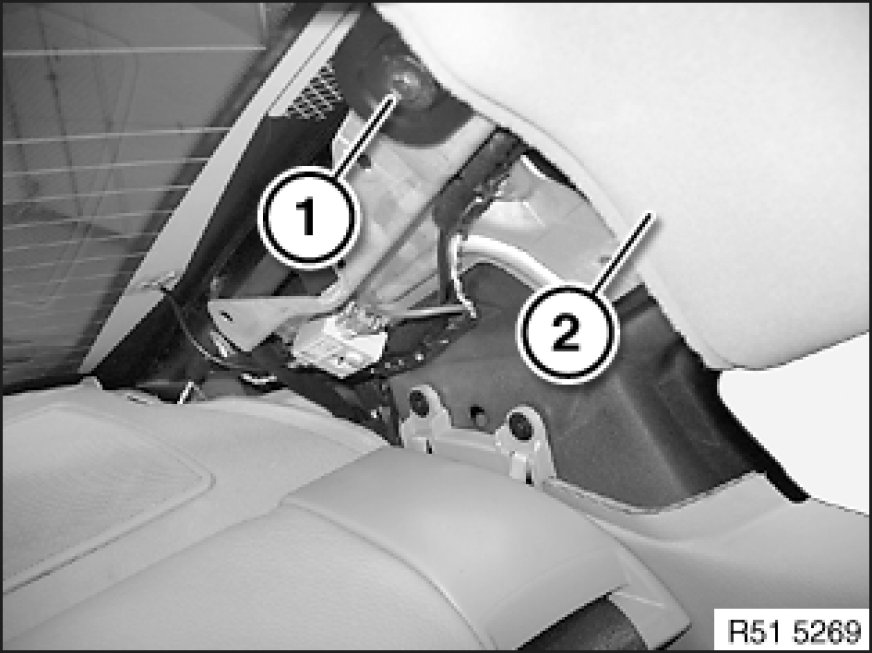
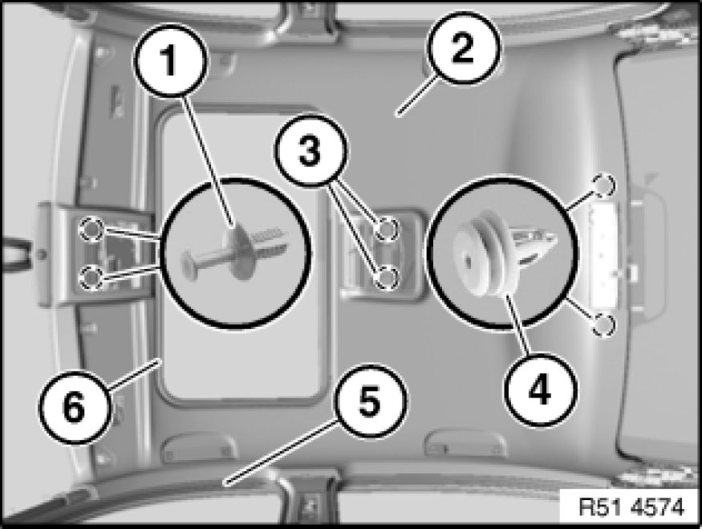
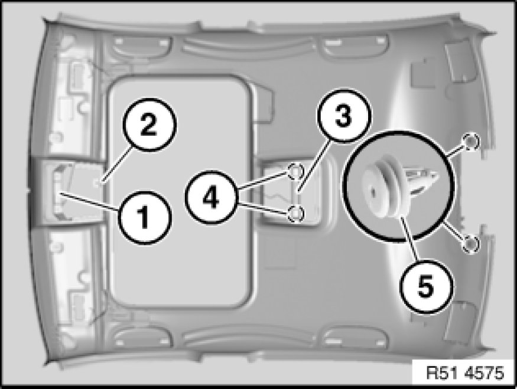

51 44 011 Removing And Installing/Replacing Headliner (With Slide/Tilt Sunroof)
51 44 011 - Removing and installing or replacing roofliner (with slide/tilt sunroof)

Necessary preliminary tasks:
- Remove sun visors and counter supports Service and Repair on left/right
- If necessary, remove both mirror lights 63 31 050 Removing and Installing/Replacing Mirror Light
- Remove roof light (front)
- Remove trim panels for roof pillar Removing and Installing/Replacing Trim for Roof Pillar at Front (A-pillar), Left or Right at front (A-pillar) left/right
- Remove front handles Service and Repair
- Remove trim panels for door pillar Removing and Installing or Replacing Panel For Left or Right Door Pillar at left/right (B-pillar)
- Remove trim panels for roof pillar Removing and Installing/Replacing Trim Panel For Left or Right Rear Roof Pillar at rear (C-pillar) left/right
- Remove rear roofliner trim
- Remove roof light (rear) 63 31 004 Removing and Installing or Replacing Complete Ceiling Light (Rear, With Module For Passenger Compartment Protection)
- Remove front head restraints Removing and Installing/Replacing Front Left or Right Head Restraint

Release screw (1) on roofliner (2) in area of C-pillar on both sides.

Important!
When removing, do not touch edges of roofliner.
The following tasks must be carried out with a second person assisting:
Move seat backs of both front seats to max. rear position.
If necessary, release expander rivets (1).
Detach roofliner (2) from Velcro-type fasteners (3).
Detach roofliner (2) from clips (4).
Detach mucket (6) towards inside.
Detach mucket (5) from both front doors in area of roofliner (2).
Lay roofliner (2) downwards.
Tilt roofliner and remove to front passenger door.

Installation:
Following parts of roofliner must not be damaged or missing:
- If necessary, mounting and frame (1) for front mounting bracket
- Wiring harness (2)
- Mounting and frame (3) for rear mounting bracket
- Velcro-type fasteners (4)
- Clips (5).

Important!
Depending on the build date/version, replacement can involve different Velcro-type connections.
Mixed installation of the Velcro-type connection is not permitted.
In order to avoid mixed installation, remove the old Velcro-type material and attach the new Velcro-type material.
New and old Velcro-type fasteners differ in colour:
Only black/black or white/white pairings are permitted.

Procedure for replacing Velcro-type connection:
Detach Velcro-type connection from slide/tilt sunroof or console connection.
Remove adhesive residue.
Clean adhesive area with spirit.
Air drying time: ≥ 1 minute
Important!
Adhesive area must be dry and free from dust and grease.
Once it has been cleaned, do not touch the adhesive area with bare hands.
Attach new Velcro-type connections.

Installation:
Installation sequence:
1. Secure roof liner with mucket
2. Secure roofliner in middle to Velcro-type fastener
3. Snap roofliner at rear onto clips
4. If necessary, insert expander rivets at front
5. Screw down grab handles at front on left/right
6. Screw down sun visors and counter supports
7. Add final details to vehicle